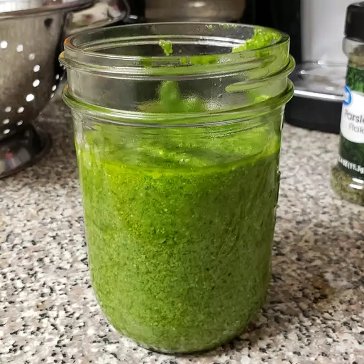

Back To Home
Pesto Sauce

Description
Basic pesto, made with basil, olive oil, pine nuts, and Parmesan cheese. This recipe differs from the classic preparation by the addition of parsley. You can add a little extra Parmesan to the mixture if you like.
Ingredients
3 cups packed fresh basil leaves
¾ cup grated Parmesan cheese
½ cup chopped fresh parsley
Directions
Combine basil, garlic, Parmesan cheese, olive oil, and nuts in the bowl of a food processor or blender. Blend to a smooth paste. Add parsley if desired.
Serve with bread or put into noodles
Back To Home